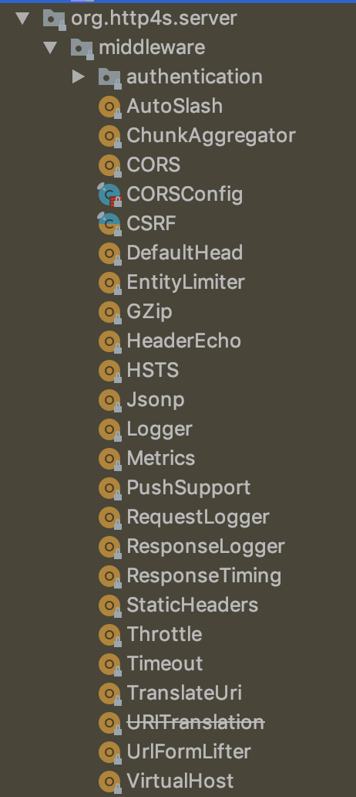
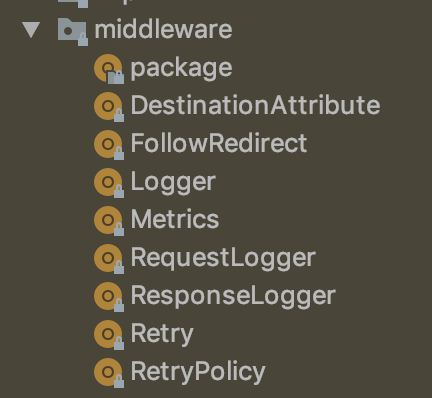

Lightweight, functional microservices
with http4s and doobie
Jakub Kozłowski - Scala Developer, Ocado Technologyf(by) Scala Night | January 25, 2019 | Minsk, Belarus
Slides: git.io/fhsW5
Part 1: The problem(s)
Let's play a game
"Never have I ever"
- Used Spring in a project larger than hello world
- Added an annotation that required 3 more to work
- Used Play and tried to upgrade from 2.3
- Cursed at dependency injection
Just some of the horrors of frameworks
Microservices
A set of architectural patterns for building distributed systems
Microservices are usually
- small
- doing one thing well
- autonomous
- isolated
- hard to do
Microservices are dangerous
- lots of infrastructure needed
- the network isn't reliable
- debugging difficulty
- generally challenging and complex
- need constant evolution
Microservices can help with
- frequent, independent deployment
- resilience
- scalability
- ease of development (within a service)
There's a lot to keep in mind

Part 2: Functions over frameworks
We can do better
Warning
Some examples may contain traces of Spring.
If you're allergic, please close your eyes.
Dependency injection
vs
Beans
@Configuration class MyConfig {
@Bean DataSource dataSource(){
//some side-effecty things allocating some DB connection pool
}
@Bean UserRepository userRepository(DataSource dataSource) {
return new UserRepositoryImpl(dataSource);
}
}vs
Startup/shutdown hooks
Startup/shutdown hooks: FP
Scheduled jobs
Scheduled jobs: FP
Resource lifetime
Resource lifetime: global to per-request
Part 3: How FP fits in
What's FP?
Lack of side effects
Definition of a side effect
Lack of referential transparency
Referential transparency
for any expression `a`
given `x = a`
All occurrences of `x` in a program `p` can be replaced with `a`
//Example
val prog1 = (x, x)
val prog2 = (a, a)
//both sides equivalent
prog1 <-> prog2Pure expressions are RT
Side effects?
Future
IO
RT == no side effects == FP
Resource
Manages resource acquisition and cleanup
Acquire/cleanup order
Acquiring lock1
Acquiring file reader: .gitignore
Acquiring lock2
Finished reading lines
Releasing lock2
Releasing file reader: .gitignore
Releasing lock1
.idea/
*.iml
*.iws
*.eml
out/Part 4: Libraries over frameworks
http4s
- functional http interface in Scala
- multiple backends
- built on fs2 and cats-effect
- resource safe, supports streaming
Http4s Route
type HttpRoutes = Request => Responsetype HttpRoutes = Request => IO[Response]type HttpRoutes = Request => IO[Option[Response]]type HttpRoutes = Request[IO] => IO[Option[Response[IO]]]//Kleisli[F[_], A, B] ~= A => F[B]
//OptionT[F, A] ~= F[Option[A]]
type HttpRoutes =
Kleisli[OptionT[IO, ?], Request[IO], Response[IO]]type HttpRoutes[F[_]] =
Kleisli[OptionT[F, ?], Request[F], Response[F]]If a route is just a function
...then we can modify its input and output
Example: Response timing
Built-in server middleware (0.20.0-M5)
What about clients?
Just another function
Built-in client middleware (0.20.0-M5)
Creating clients from routes - trivial server stubbing
Calling endpoint in test = calling a function
doobie
- functional JDBC layer
- built on fs2 and cats-effect
- resource safe, supports streaming
- no reflection/magic - just write SQL
case class Country(name: String, capital: String)
def countryById(id: CountryId): IO[Option[Country]] =
sql"""select c.name, c.capital
from countries
where c.id = $id"""
.query[Country]
.option
.transact(transactor)Transactor
Query
def countryById(id: CountryId): Query0[Country] =
sql"""select c.name, c.capital
from countries
where c.id = $id""".query[Country]val countries: Query0[Country] =
sql"select c.name, c.capital from countries"
.query[Country]val country1: ConnectionIO[Option[Country]] =
countryById(CountryId(1L)).optionval countriesStream: Stream[ConnectionIO, Country] =
countries.streamConnectionIO -> IO
transactor.use { xa =>
country1
.transact(xa)
.flatMap(putStrLn(_)) // Some(Country(...))
}End-to-end streaming with http4s
Query typechecking
class AnalysisTestScalaCheck extends FunSuite with Matchers with IOChecker {
val transactor = Transactor.fromDriverManager[IO](
"org.postgresql.Driver", "jdbc:postgresql:world", "postgres", ""
)
test("countryById") { check(countryById(CountryId(1L))) }
test("countries") { check(countries) }
}Links
Slides: https://git.io/fhsW5
Code: https://git.io/fhoVH
Questions
Thank you!
Get in touch
(Read my blog! blog.kubukoz.com)